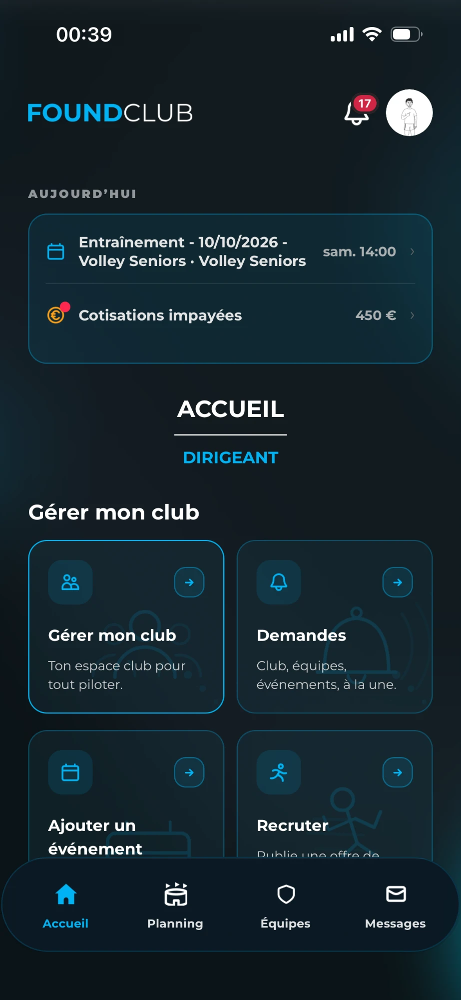
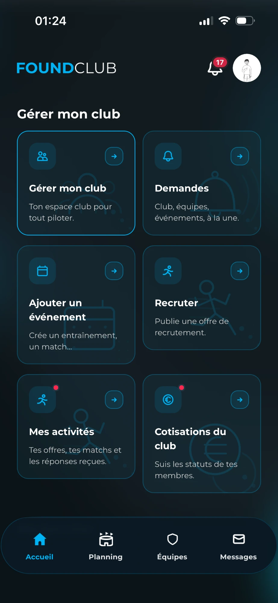
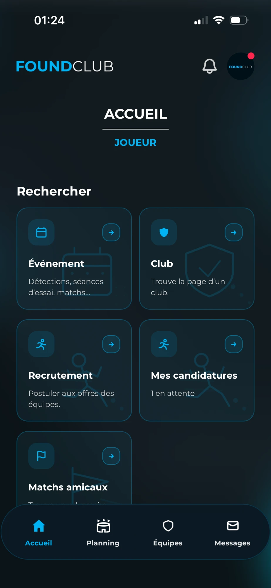
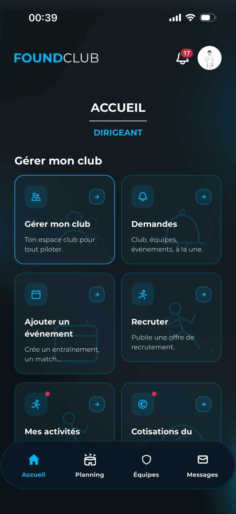
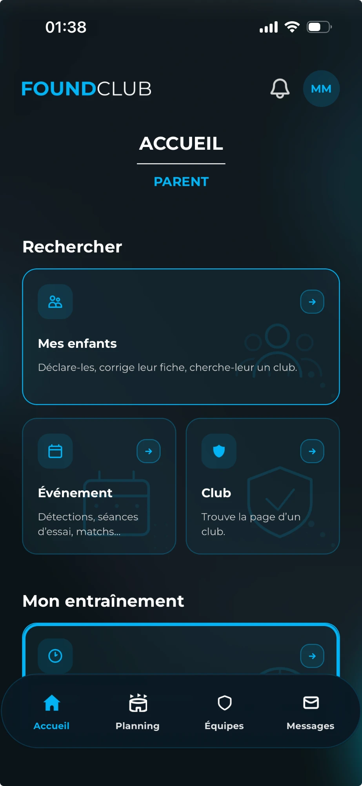
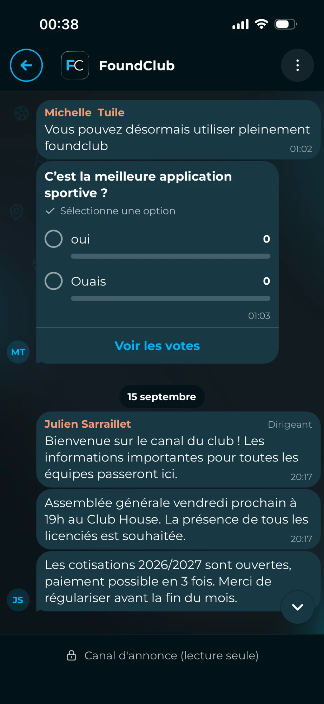
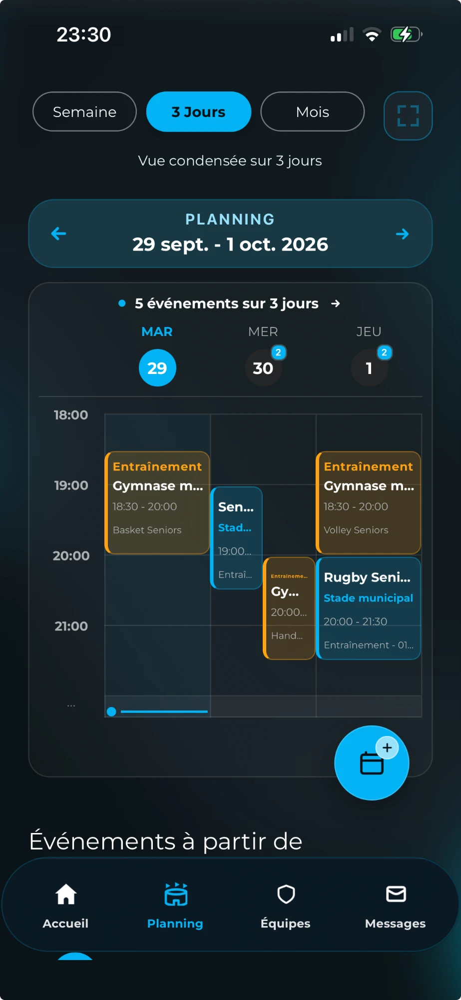
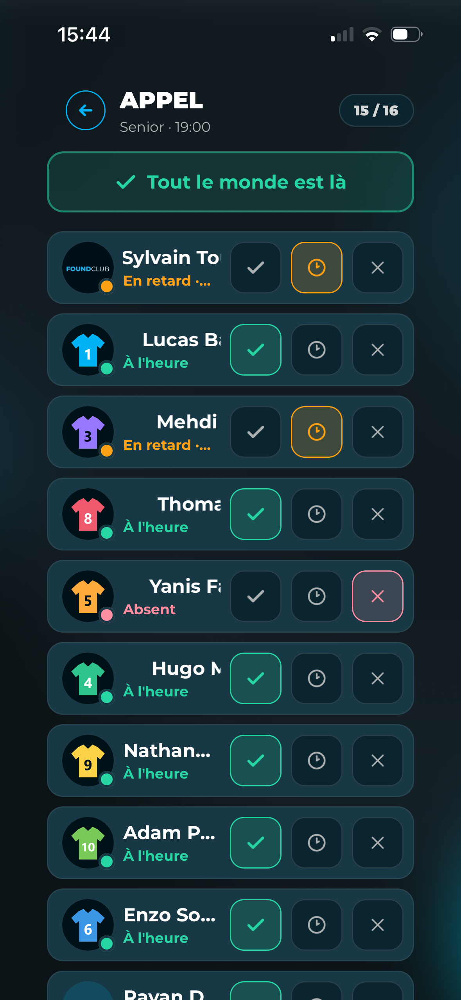
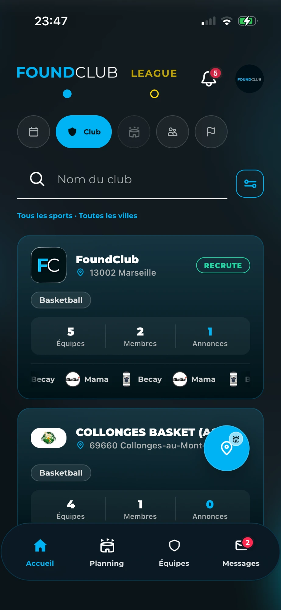
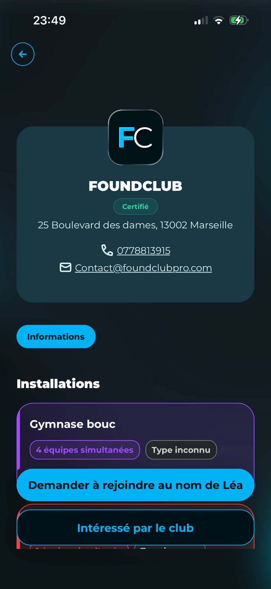
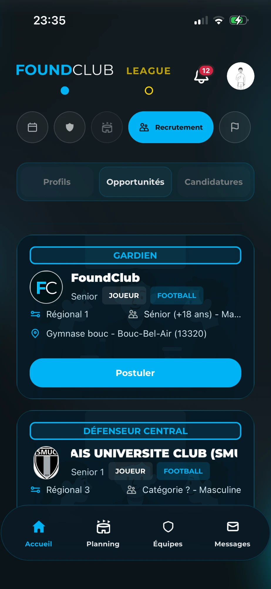
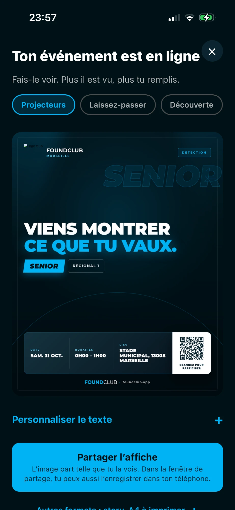
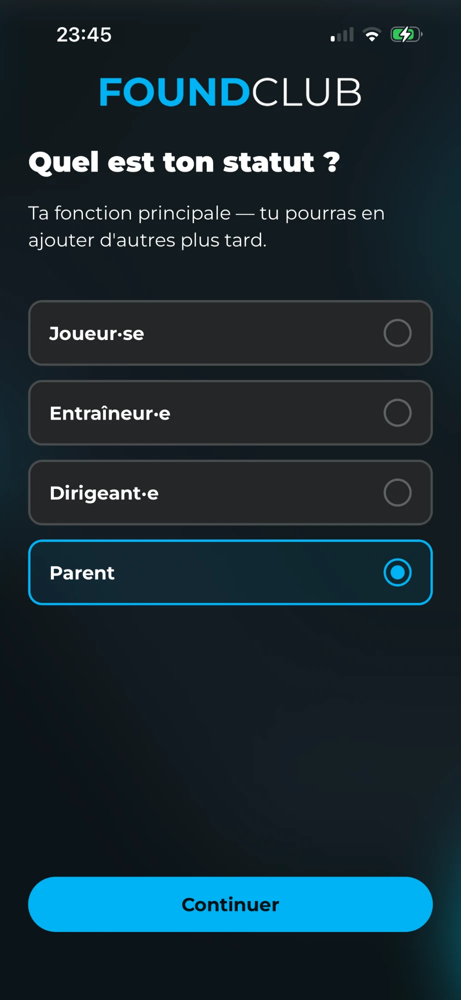

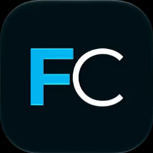


Toi aussi, dans ton club en 2026,
vous utilisez encore les groupes WhatsApp pour tout organiser ?
Les convocations, les entraînements, les matchs,
toutes les informations importantes :
tout passe par WhatsApp,
et au final, on s'y perd.
Mais aujourd'hui, j'ai une application à vous présenter
qui pourrait changer l'organisation de ton club.
Cette application, c'est FoundClub.
L'objectif est très simple :
faciliter la communication et l'organisation
entre le club, les joueurs, les dirigeants, et même les parents.
Plutôt que de multiplier les groupes WhatsApp
et de chercher les informations un peu partout,
vous pouvez tout centraliser au même endroit.
Et ce qui est intéressant, c'est que FoundClub
ne s'arrête pas seulement à la gestion de ton équipe :
l'application a aussi pour ambition
de faciliter la connexion entre les joueurs et les clubs.
Alors, que tu sois joueur, éducateur, président, dirigeant, parent…
C'est le moment de venir découvrir FoundClub.
Et dis-moi en commentaire si vous utilisez encore les groupes WhatsApp,
ou si vous utilisez une application.
Ciao mes petits potes !